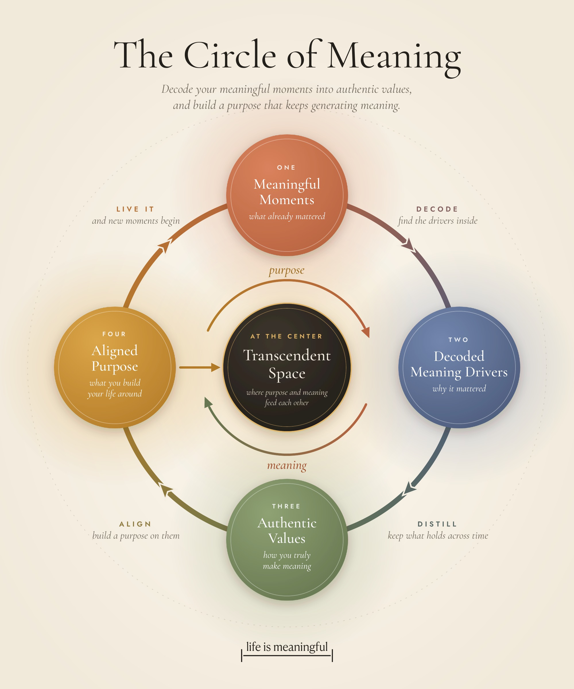

the Circle of Meaning
First four steps open now
I've asked hundreds of people in parks for the most meaningful moment of their life, and found 27 Meaning Drivers in their answers. The Circle of Meaning is the unique life philosophy and meaning and purpose discovery framework I built on what they taught me. It helps you live a fulfilled, values aligned life, full of purpose and consistent meaning.

Four movements: decode, distill, align, live it. Eleven steps to walk them, and the first four are open today.
No. 1 · The philosophy
Family, school, religion, culture and a phone that keeps you comparing handed you a list of what to want. You never got to choose it, and that is the system, not a flaw in you.
The moments that have meant the most to you already show what you value. Nothing here is attributed to you that your own story doesn't support.
Most advice asks you to pick a purpose first and hope it fits. Here you write it at step nine, standing on your own moments, drivers and values.
No. 2 · The eleven steps
Steps one to four are open today as the Meaning Map. Five to eleven are still being built, and I'd rather tell you that than pretend.
1
You write down the most meaningful moments of your life. Can't think of any? That's common, and nine Unearthing Questions help you find them.
Open now in the Meaning Map
2
You see your moments decoded into Meaning Drivers and values, then read side by side. It shows you the patterns that are hard to see from inside your own life.
Open now in the Meaning Map
3
You choose the four to seven Meaning Drivers you want to orient your life around, on purpose.
Open now in the Meaning Map
4
You narrow your values to ten, then five, then two. Those two are the ones you make decisions by.
Open now in the Meaning Map
5
You look at the people in your life and see which relationships bring your drivers to life.
Being built
6
You look at your city, your neighborhood and the places you keep going back to, and see which ones reflect your values.
Being built
7
You hold your work, your hobbies and the pursuits you've never taken seriously up against your Life Guiding Drivers.
Being built
8
You name the practices that connect you to something larger than yourself.
Being built
9
You write four: how you show up in the world, how you treat the people you love, how you give value, and how you serve your communities.
Being built
10
You live it through three practices: a daily Meaningful Moment Journal, a Monthly Meaning Driver and a yearly Meaning Misogi.
Being built
11
You act on a purpose built from your own values, and that leads to new meaningful moments. Those moments strengthen the purpose, so each feeds the other.
Being built
No. 3 · Why a circle
Living this way brings new meaningful moments, and those moments are new evidence about who you are now. So you come back, decode what has mattered since, and ask whether your values still hold and your purpose still fits.
In a year, in five, in ten.
The Meaning Map takes your own moments through steps one to four: your moments, your Map, your Life Guiding Drivers and your two Life Guiding Values.
Begin your Meaning Map · $97Leave your email and I'll write to you when steps five to eleven open.